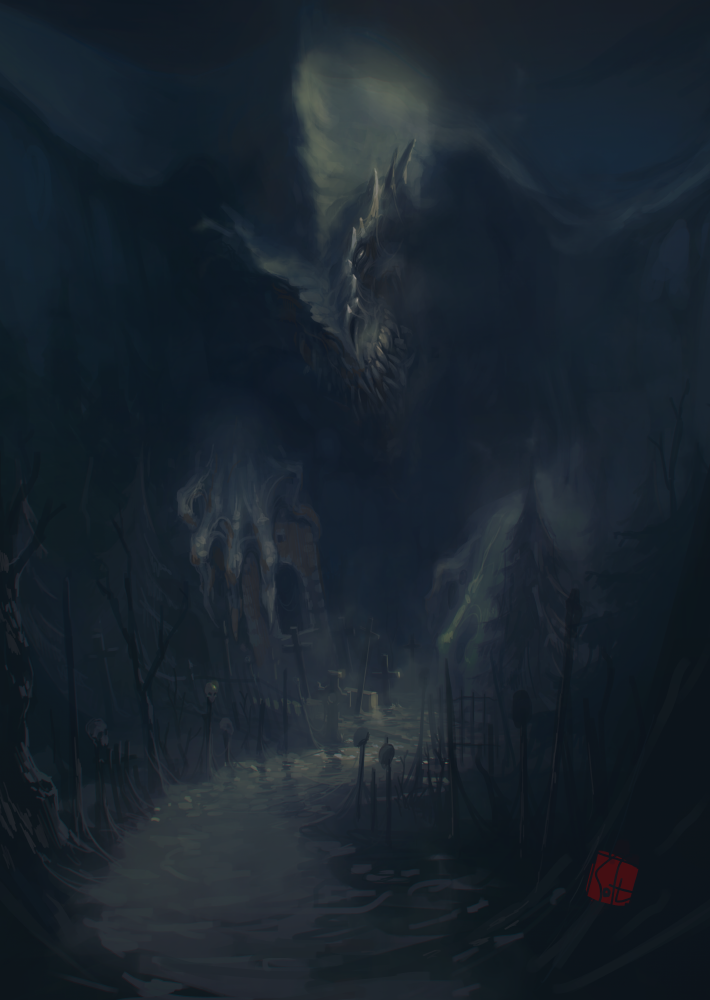

Gnoll



1
1600
4
20
6
6
Recruited in
Captain's Quarters
Description
Gnolls are a race of beastmen of the kingdom of Tatalia, the most numerous inhabitants of this region, and also, along with lizards, the backbone of its armies. From the ranks of the gnolls, excellent military leaders often stand out, some of whom even become heroes in the future. They are armed with a flail, protected by a light leather breastplate, and have no other armor. Hired from the Gnoll Hut.
Tactics
Gnolls have decent defense and health, but their attack and speed are quite low, so they perform best in defense. In particular, gnolls can provide good cover for archer lizards.